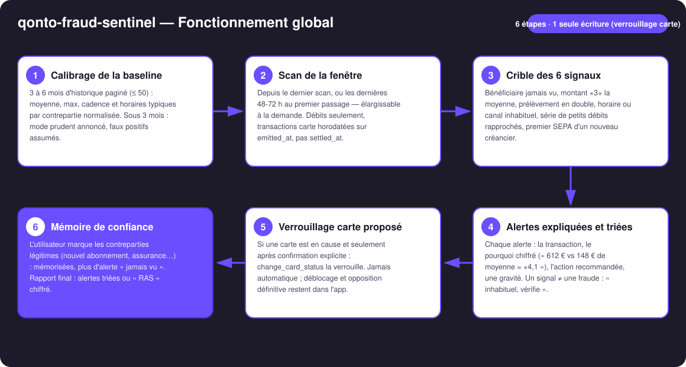
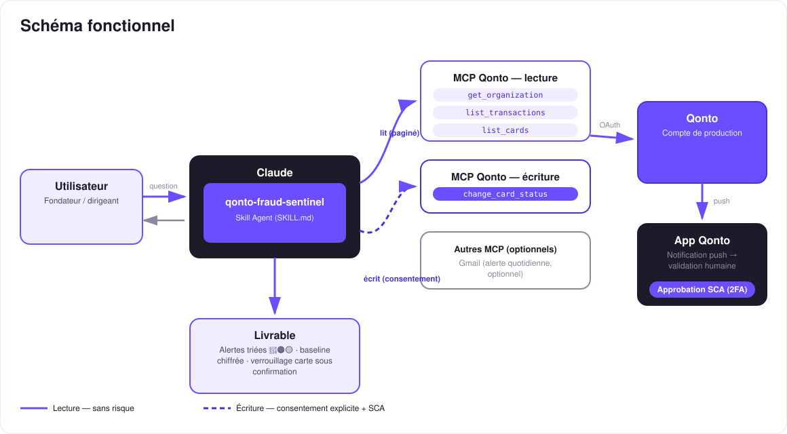

Le garde du corps du compte — 30 secondes chaque matin, les dernières transactions au crible d'une baseline chiffrée.
Les débits frauduleux ou anormaux, on les découvre en général trop tard — au relevé, ou jamais. Le skill passe les dernières transactions au crible d'une baseline construite sur l'historique réel :
Bénéficiaire jamais vu, montant ×3+, prélèvement en double, horaire/canal inhabituel, série de petits débits (test de carte volée), premier SEPA d'un nouveau créancier.
La transaction, le pourquoi chiffré (« 612 € vs 148 € de moyenne = ×4,1 »), l'action recommandée, une gravité 🔴🟠🟡.
Le skill dit « inhabituel, vérifie », jamais « fraude détectée ». Faux positifs assumés — les contreparties de confiance se marquent en un message.
Verrouillage de carte proposé si une carte est en cause, exécuté seulement après confirmation explicite. Déblocage et opposition : dans l'app.
| Prérequis | Détail | Obligatoire |
|---|---|---|
| Compte Qonto production | Le skill s'adapte à toute organisation — get_organization d'abord, zéro donnée en dur | ✅ |
| Pays | Signaux comportementaux, universels (zone SEPA) : identiques dans tous les pays Qonto (FR, DE, ES, IT, AT, NL, BE, PT) — seul le discours s'adapte | ℹ️ détecté |
| MCP Qonto connecté | Connecteur officiel (claude.ai / Claude Desktop), login OAuth | ✅ |
| Historique ≥ 3 mois | En dessous : mode prudent annoncé — baseline plus mince, plus de faux positifs, alertes au conditionnel (3-6 mois pour calibrer) | ⭕ recommandé |
| MCP Gmail | Enrichissement optionnel : brouillon de digest quotidien — détecté dynamiquement, le cœur marche sans | ⭕ optionnel |

emitted_at, pas settled_at : 1-2 jours de décalage de règlement fausseraient les doublons et les horaires
Le modèle de sécurité, pas une limitation : la lecture est sans risque ; l'écriture est un verrouillage de carte — réversible, proposé en réaction à une alerte carte, exécuté seulement après confirmation explicite dans la conversation. Déblocage, opposition définitive, révocation de mandat SEPA et remplacement de carte restent dans l'app Qonto. Aucun argent ne bouge, dans aucun scénario.
| Signal | Critère (baseline chiffrée) | Action recommandée |
|---|---|---|
| Bénéficiaire jamais vu | Première apparition d'une contrepartie sortante sur 3-6 mois | Vérifier — nouveau fournisseur légitime ? Marquer de confiance |
| Montant inhabituel | ≥ ×3 la moyenne de cette contrepartie (ou du poste si elle est nouvelle) | Vérifier la facture / le contrat correspondant |
| Prélèvement en double | Même contrepartie, même montant (±1 %), à 1-5 jours d'écart | Vérifier ; contester le doublon auprès du créancier ou via l'app |
| Horaire / canal inhabituel | Paiement carte à une heure jamais vue pour cette contrepartie ; type d'opération inédit | Vérifier ; carte douteuse → verrouillage proposé |
| Série de petits débits | ≥ 3 petits débits (dernier décile ou < 10 €) en quelques minutes/heures | Pattern de test de carte volée → verrouillage proposé (change_card_status) |
| Premier SEPA d'un nouveau créancier | Premier prélèvement d'un créancier absent de la baseline (mandat tout juste utilisé) | Vérifier le mandat ; opposition via l'app si non reconnu |
| Sortie | Format | Quand |
|---|---|---|
| Réponse dans la conversation | Tableau markdown des alertes (transaction · signal · baseline · action · gravité) ou « RAS » chiffré | Toujours — c'est la base |
| Rapport du matin | Fichier/artifact HTML compact : alertes triées, baseline, état des cartes | Si l'hôte affiche les fichiers (artifacts claude.ai, Claude Desktop, Claude Code) ; repli automatique sur le tableau |
| Digest email | Brouillon Gmail du scan quotidien | Seulement si un MCP Gmail est détecté — optionnel |
La démo ≤ 3 min jointe à la PR suit le storyboard : problème → baseline → les signaux en action → la routine du matin en direct (une alerte « premier SEPA d'un créancier jamais vu, 249 € » — c'est le nouveau contrat d'assurance, marqué de confiance en un message) → wrap-up. Tournée en live sur un compte de production réel.
| Idée | Effort | Note |
|---|---|---|
| Scan planifié (routine quotidienne automatisée) | Faible | Le prompt du matin devient un rendez-vous programmé |
| Seuils personnalisables (×2, ×5, montant plancher) | Faible | La baseline reste le défaut intelligent |
| Score de risque par contrepartie sur 12 mois | Moyen | Réutilise le moteur de baseline |
| Alerte Telegram/Slack quand le MCP est présent | Faible | Même logique multi-MCP optionnelle que Gmail |
change_card_status sans confirmation explicite dans la conversation en cours ; jamais présenté comme fait si l'appel a échouéemitted_atVoir aussi : qonto-supplier-detective (skill #13) — factures fournisseurs historiques et récupération d'argent. Sentinel est son jumeau sécurité : temps réel et quotidien.